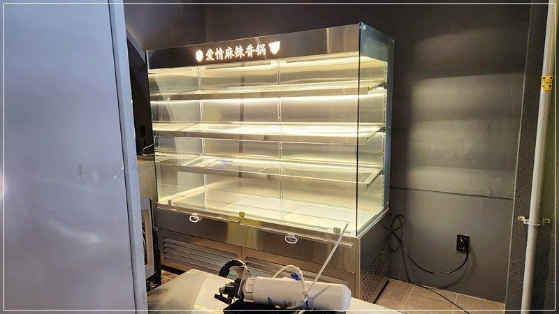
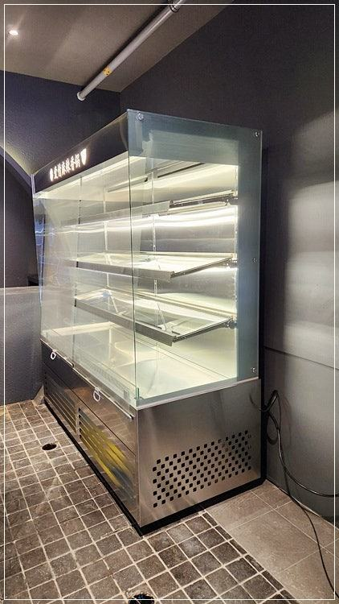
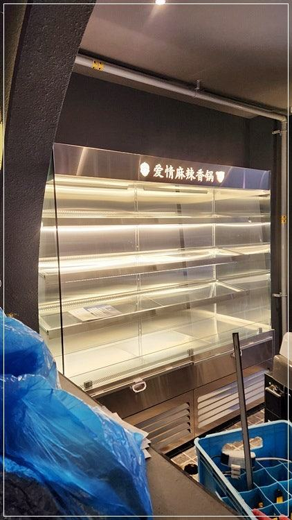
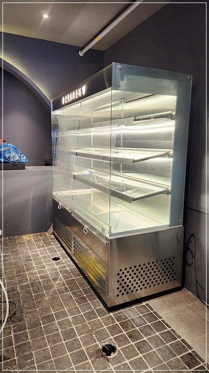
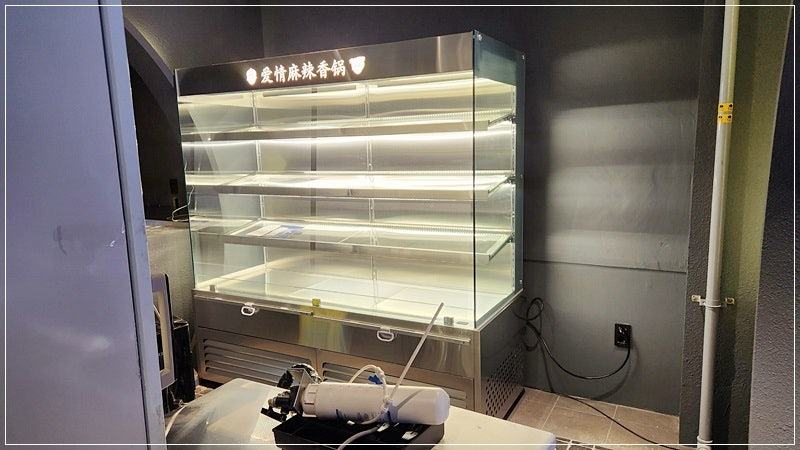

오픈쇼케이스
샐러드가게 냉장고, 가정용과 업소용 오픈쇼케이스는 무엇이 다를까

샐러드가게는 재료를 쌓아 두는 보관 냉장고와, 완성된 샐러드 볼을 손님이 직접 집어 가는 오픈쇼케이스를 따로 두는 것이 기본입니다. 가정용이나 일반 업소용 냉장고는 문을 계속 여닫는 진열 환경을 견디도록 만들어지지 않아 채소 신선도와 매장 동선 모두에서 한계가 있습니다.
안녕하세요. 업종에 맞춰 오픈쇼케이스와 업소용 냉장고를 직접 설계하고 만드는 한성쇼케이스입니다.
샐러드가게를 처음 여시는 사장님들께서 자주 물어보시는 게 있습니다. 작은 매장이니 큰 양문형 냉장고 하나에 재료도 넣고 완성품도 넣으면 안 되느냐는 질문이죠.
처음 몇 주는 버틸 수 있지만, 점심시간에 포장 손님이 몰리기 시작하면 문제가 드러납니다. 문을 열 때마다 냉기가 빠져 잎채소가 숨이 죽고, 손님은 무엇이 있는지 보이지 않아 카운터에서 메뉴를 다시 묻게 됩니다.
오늘은 샐러드가게 냉장고를 어떻게 나눠 갖추면 좋은지, 일반 냉장고와 업소용 오픈쇼케이스가 어떤 점에서 다른지 정리해 보겠습니다.
1. 보관용과 진열용은 역할이 다릅니다
주방 쪽 냉장고는 손질 전 채소, 소스, 토핑 재료를 담아 두는 창고 역할입니다. 문을 여는 횟수가 적고 내부가 꽉 차 있어도 괜찮습니다.
반면 진열용은 완성된 샐러드 볼과 음료를 손님 눈앞에 보여 주고, 손님이 직접 꺼내 가는 판매대 역할을 합니다.
이 두 가지를 냉장고 하나로 해결하려고 하면 재료 정리가 흐트러지고, 위생 관리도 어려워집니다. 매장이 작다면 주방에는 작업대 겸용 테이블 냉장고를, 홀 쪽에는 폭을 줄인 오픈쇼케이스를 두는 방식이 많이 쓰입니다.
- 주방 보관 재료와 진열 완성품 목록을 따로 적어 보세요.
- 포장 손님 비율이 높다면 진열용을 우선 계획하세요.
2. 문이 없는 오픈쇼케이스가 맞는 이유
오픈쇼케이스는 앞면에 문이 없고, 위에서 아래로 흐르는 냉기 막으로 내부 온도를 지킵니다. 손님이 문을 열고 닫을 필요 없이 바로 집어 갈 수 있어 점심 피크 시간에 줄이 빨리 줄어듭니다.
가정용 냉장고는 문을 닫아 두는 것을 전제로 만든 제품이라, 문을 자주 열면 내부 온도가 쉽게 오르고 회복도 느립니다.
일반 유리문 업소용 냉장고도 문을 계속 여닫으면 유리에 김이 차서 샐러드가 잘 보이지 않습니다.


3. 잎채소를 위한 냉기와 조명
샐러드는 잎채소가 주인공이라 찬바람이 용기에 직접 세게 닿으면 뚜껑 가장자리부터 채소가 마르기 쉽습니다.
냉기가 칸마다 고르게 퍼지도록 설계됐는지, 선반 앞쪽까지 온도가 유지되는지 샘플에서 확인해 보세요.
조명도 중요합니다. 초록 채소와 방울토마토, 닭가슴살의 색이 자연스럽게 보이는 조명 색을 고르면 같은 메뉴도 훨씬 신선해 보입니다.
선반 높이는 샐러드 볼 높이에 맞춰야 칸마다 빈 공간 없이 채울 수 있습니다.
- 샐러드 볼 높이를 재서 선반 간격을 정하세요.
- 채소 색이 잘 보이는 조명 색을 확인하세요.
- 냉기 토출구 바로 앞 칸에 무엇을 둘지 정해 두세요.
4. 매장 폭에 맞는 크기와 마감
샐러드가게는 테이크아웃 위주의 작은 매장이 많아 기성품을 넣으면 폭이나 깊이가 애매하게 남거나 모자랍니다.
매장 폭에 맞춰 길이와 깊이를 정하면 같은 공간에서도 진열 칸을 더 확보할 수 있습니다.
외관 색과 프레임 소재는 매장 콘셉트를 그대로 보여 주는 부분입니다. 밝은 우드나 화이트 톤 인테리어라면 프레임 색을 맞추는 것만으로도 매장이 정돈돼 보입니다.
체크리스트
- 보관용·진열용 냉장고 역할 분리
- 오픈쇼케이스 냉기 막 방식 확인
- 샐러드 볼 높이에 맞춘 선반 간격
- 채소 색이 잘 보이는 조명
- 매장 폭에 맞춘 길이·깊이
- 프레임 색과 인테리어 톤
손님이 재료를 직접 고르는 마라탕 매장 쇼케이스 제작 사례
샐러드가게처럼 손님이 냉장 진열대 앞에서 재료를 직접 골라 담는 마라탕 매장의 주문 제작 사례입니다.
제작 전에 쇼케이스를 어떤 방식으로 쓸지, 어느 정도 크기를 예상하시는지, 외관은 어떤 느낌을 원하시는지 먼저 자세히 여쭤봤습니다.
사장님이 익숙하지 않은 부분은 기존에 작업했던 매장 사례와 요즘 많이 쓰는 스타일을 보여 드리며 조명과 프레임 색을 함께 맞췄습니다.
상담이 끝난 뒤 디자이너가 시안을 만들고 자동화 공정에서 제작해 배송과 설치까지 마쳤고, 사장님께서는 매장 분위기까지 달라졌다는 반응을 주셨습니다.





자주 묻는 질문
작은 매장인데 오픈쇼케이스 하나만 둬도 될까요?
완성품 진열만 한다면 가능하지만 손질 전 재료를 함께 넣으면 위생과 정리가 어려워집니다. 주방에 작은 테이블 냉장고를 따로 두는 구성을 함께 검토해 보세요.
오픈쇼케이스는 문이 없어서 전기를 많이 쓰지 않나요?
문이 있는 냉장고보다 냉기가 밖으로 나가는 구조인 건 맞습니다. 영업 후 덮개나 커튼을 내려 두면 냉기 손실을 줄일 수 있으니 제작 때 함께 상담해 보세요.
샐러드 메뉴가 바뀌면 선반 높이도 바꿀 수 있나요?
선반 높이 조절 구조로 만들면 용기 크기가 바뀌어도 대응할 수 있습니다. 주로 쓰실 용기 규격을 알려 주시면 그에 맞춰 설계해 드립니다.
매장 조건에 맞춰 만드는 한성쇼케이스
원하시는 제품 사진과 설치할 공간 사진만 보내 주셔도 매장에 맞는 구성을 추천해 드립니다.
- 전국 240여 개 A/S 전담 센터 운영
- 본사 대량 자재 매입으로 품질 대비 합리적인 가격
- 유럽제·삼성 냉각 콤프레셔 적용
- 국내 최초 쇼케이스 전문 디자이너 상주
매장 폭과 원하는 진열 구성을 알려 주세요. 실측과 견적을 안내해 드립니다.
031-986-2458